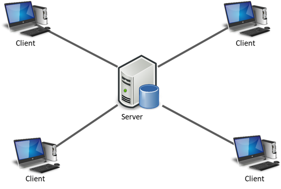

Diversas aplicaciones se ejecutan en un entorno cliente/servidor. Esto significa que los equipos clientes (equipos que forman parte de una red) contactan a un servidor, un equipo generalmente muy potente en materia de capacidad de entrada/salida, que proporciona servicios a los equipos clientes. Estos servicios son programas que proporcionan datos como la hora, archivos, una conexión, etc.
Los servicios son utilizados por programas denominados programas clientes que se ejecutan en equipos clientes. Por eso se utiliza el término "cliente" (cliente FTP, cliente de correo electrónico, etc.) cuando un programa que se ha diseñado para ejecutarse en un equipo cliente, capaz de procesar los datos recibidos de un servidor (en el caso del cliente FTP se trata de archivos, mientras que para el cliente de correo electrónico se trata de correo electrónico).
